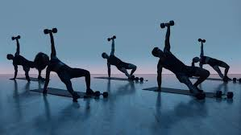

Intro
This past week, I was doing Corepower’s one week free trial where I was able to take different types of yoga classes and try out Corepower for free! I would love to try out more workout classes and learn about if they have new member perks or equipment necessary. For example, since Corepower is hot yoga classes, you have to bring a mat and probably a towel to class or else you have to rent them from the studio. Let’s learn about more types of classes from Claude Sonnet-4.5!

PROMPT: I am a student at the University of Pennsylvania and am interested in trying out more workout classes. Please give me recommendations that I could get to from campus and tell me about any new member perks. Also, tell me if there is any equiment necessary for them.
Great! I’ve found some excellent options for you near Penn’s campus. Let me give you recommendations for workout classes accessible from campus, including new member perks and equipment needs:
Near Campus/University City
Orangetheory Fitness University City
📍 3711 Market Street (walking distance from campus)
About: Heart rate-based interval training that combines cardio, strength training, and HIIT in a group setting.
New Member Perks: - First class is free - Current promotions include Premier Membership for $24 for the first month - When studios first open, they offer founding member rates that lock you in at a cheaper lifetime rate
Equipment Needed: You’ll need to purchase a heart rate monitor (they sell them at the studio). Athletic shoes and comfortable workout clothes are required.
Center City/Rittenhouse (Short transit ride)
YogaSix Rittenhouse
📍 1701 Walnut Street
About: Six different class types from hot and powerful to slow and mindful, including beginner classes and sculpt classes.
Equipment Needed: No equipment needed - just bring yourself! The studio provides mats and any props needed for class.
SoulCycle Rittenhouse
📍 113 S 16th Street
About: Indoor cycling class in candlelit studios to the rhythm of curated playlists.
New Member Perks: First Time 2 Week Unlimited Pack for new riders (limited to one ride per day)
Equipment Needed: You’ll need cycling shoes with Delta or SPD cleats (you can rent or purchase at the studio). They provide weights for the upper body portion of class.
Barry’s Bootcamp Philadelphia
📍 1911 Sansom Street
About: Hour-long HIIT classes combining 25-30 minutes of interval-based cardiovascular routines on treadmills with 25-30 minutes of strength training.
Equipment Needed: Just athletic shoes and workout clothes - they provide all weights and equipment.
On Campus
Don’t forget you also have Penn Campus Recreation at Pottruck Center (3701 Walnut St), which offers spinning, Body Pump, strength classes, yoga, and dancing classes, and it’s included with your student fees!
All of these studios are easily accessible via walking, SEPTA, or a short ride from campus. I’d recommend checking each studio’s website for their current class schedules and any ongoing promotions!
I thought that Claude’s response was good and I especially like how it highlighted the classes at Pottruck which are definitely the most accessible for most students. However, I would still like to learn more about other good deals for joining as a new member and which workouts people think are the best.
PROMPT: What places have good deals for starting as a new member?
Based on my search, here are the studios with the best new member deals:
Best New Member Deals
Orangetheory Fitness University City ⭐
📍 3711 Market Street
New Member Offers: - First class is completely free - Premier Membership for just $24 for your first month - 50% off 3 months of membership dues (limited time) - Free heart rate monitor promotion for uCity Square employees and residents (worth checking if this applies to Penn students!)
SoulCycle Rittenhouse
📍 113 S 16th Street
New Member Offers: - First Time 2 Week Unlimited Pack for new riders, with one ride per day allowed - The 2-week unlimited pack typically comes at a discounted rate for first-timers
YogaSix Rittenhouse
📍 1701 Walnut Street
New Member Offers: - While I didn’t find specific current promotions, YogaSix typically offers introductory packages for new members - Best to contact them directly at (215) 309-1799 or rittenhouse@yogasix.com for current new member specials
Barry’s Bootcamp Philadelphia
📍 1911 Sansom Street
Note: I didn’t find specific new member promotions for Barry’s Philadelphia location. Individual classes are around $30, with class packages and memberships available.
My recommendation: Orangetheory has the most generous new member deals right now, especially with the $24 first month and potential 50% off for 3 months. Plus, it’s the closest to campus!
PROMPT: Can you tell me about other options too?
Absolutely! Let me search for more workout class options near Penn’s campus.> Absolutely! Here are more great workout class options near Penn’s campus:
Barre Studios
Tuck Barre & Yoga - University City ⭐
📍 3400 Lancaster Avenue (RIGHT on campus - between Penn and Drexel!)
About: Community-oriented space offering barre classes (including Barre Bounce with trampolines), plus three types of yoga: Yin, Vinyasa, and Ashtanga.
Student Perks: - $18 for a drop-in class (vs. regular $20), $139 or $129 for a month unlimited, and $119 for yoga-only unlimited - Student discounts and specials available due to close proximity to Drexel and Penn
Equipment Needed: Nothing! They provide mats, equipment and any props you’ll need. Optional barre socks for better grip.
Pure Barre Center City
📍 1701 Walnut Street, 4th Floor
About: Low-impact, high-intensity workout inspired by yoga, Pilates, and ballet with four class formats: Classic, Align, Empower, and Define.
Student Perks: - Beginners get a Barre Tasting (three classes) for $33 and an Intro month for $99 (unlimited classes for one month) - After that, class packages are 20 percent off for students
Equipment Needed: Nothing - studio provides everything!
Cycling Studios
CycleBar Center City
📍 1521 Locust Street
About: Music-driven, instructor-led cardio cycling with rides tailored to all fitness levels, including rhythm-based and interval-packed classes.
New Member Perks: - First ride FREE - When new studios open, they often offer founding member rates (like $99/month unlimited for life)
Equipment Needed: Cycling shoes (rental available, may have fee). They provide water, towels, and lockers.
Pilates
[solidcore] (Multiple locations in Philly)
About: Pilates redefined - a full-body workout that utilizes slow and controlled movements, designed to break down muscles so they build back stronger.
Student Perks: - 10% to 20% discount on most items - verify through Student Beans, UNiDAYS, or SheerID - $99 for four-pack of classes (student rate) - First class around $20 (vs. standard $43), or intro packages like 2 classes for $50 or 3 classes for $75
Equipment Needed: Done barefoot, grip socks are optional
Summary of Best Student Deals:
Most Convenient (On/Near Campus): - Tuck Barre & Yoga - literally between Penn and Drexel with student discounts - Penn Campus Recreation at Pottruck - included with your student fees!
Best Value for New Members: - Orangetheory: $24 first month + 50% off 3 months - SoulCycle: 2-week unlimited for new riders - CycleBar: First ride free - [solidcore]: Intro classes starting at $20
Best Student Discounts: - Pure Barre: 20% off class packages for students - Tuck Barre & Yoga: $18 drop-ins, discounted monthly memberships - [solidcore]: 10-20% off with student verification
I’d especially recommend checking out Tuck Barre & Yoga since it’s right on campus and has great student pricing!
For these prompts, I definitely wanted to understand more about other studios rather than the ones that Claude suggested at first. I was a little surprised that it continued with only the ones that it mentioned, but I guess that it makes sense because it is using the same context. Something I was also surprised to see was that solidcore was mentioned, but it’s two week unlimited class trial was not mentioned or the one week free trial at Corepower too. In my opinion, these are some of the best deals since they are unlimited and completely free. However, Claude did not mention these at all. I think this happened because Claude was not actually looking for “good deals”. Claude gave me useful information about different studios, but it missed the most important deals that would actually save me the most money.
PROMPT: Which classes are most loved by people?
Based on my search, here are the classes that people seem to love the most in Philadelphia:
Most Popular Classes According to Reviews:
1. Barry’s Bootcamp
Barry’s has been voted “The Best Celebrity Workout” by Allure and Los Angeles Magazine. Reviewers say “Barry’s Bootcamp is by far my favorite” and it “gives you that high that only an intense, but fun workout can”. The workout burns up to 1,000 calories per class and is considered to be the O.G. high-intensity workout.
What people love: The Red Room (a dimly lit space), heart-pumping playlists, and motivating instructors, plus the full-blown smoothie cafe in the lobby.
2. SoulCycle
Reviewers describe it as a “life-changing, inspirational workout” with “high-energy, motivational instructors who are total rock stars”. The company thinks of every class like a live production, with curated playlists and instructors who belt out encouragement.
What people love: The instructor-led experience in the dark with “cool studio lighting and candles,” relatively low pressure environment, and friendly vibes. People were “raving about SoulCycle” and complaining they couldn’t get into classes because they were so popular.
3. [solidcore]
[solidcore] appears as the #1 ranked fitness class in multiple Philadelphia Yelp searches. Reviews mention “Solidcore is definitely one of the hardest fitness classes I have ever taken, but in a good way”.
What people love: Instructors are attentive and “show options for beginners and those that are more advanced,” and the studio is “very clean and really presentable”.
4. Orangetheory Fitness
Orangetheory appears in multiple top fitness class rankings for Philadelphia. People love “the group class environment and the fact that you have a heart rate monitor screen to see how you’re doing”.
5. Thrive Pilates
Multiple reviewers specifically mention Thrive, with one saying “I wasn’t able to find a studio I loved. Until now… Enter Thrive, a beautiful studio with easy booking, reasonable priced, friendly staff, and a great instructor”.
Overall trends: The most loved classes seem to combine challenging workouts with amazing instructors, great music/playlists, and a strong community vibe. Barry’s and SoulCycle stand out for their “production” quality and theatrical elements, while [solidcore] and Orangetheory are praised for being hard but effective with supportive instructors.
I have heard good things about all of these places except for Thrive Pilates, so maybe I will check that out!